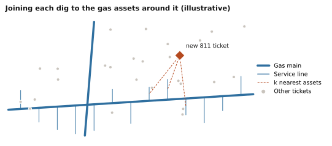
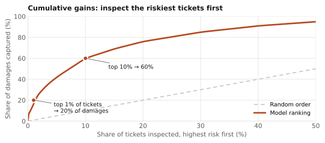

The problem
Before digging, an excavator files an 811 ("call before you dig") ticket. A gas utility receives far more tickets than its damage-prevention team can visit, and actual damages are rare. The team needs a ranked list, not a yes/no label, to decide where limited inspection time goes each day.
1 Clean and link messy records
Damages had to be linked back to the tickets that caused them, and the link was a ticket number typed by hand in the field. Entries like "unknown", "?", "forgot to get it" or a bare year were common, so I built rule-based cleaning to recover valid links and drop the rest. Excavator names were normalized with fuzzy matching so one contractor's history was not split across spellings.
Under the hood. Six years of tickets and damage reports. Midway through that history the client switched ticketing software, which changed what several key fields meant; features that depended on those fields were checked before and after the switch rather than trusted blindly.
2 Build features that describe the dig
Each ticket is described from five angles: who is digging, what work they are doing, where it is relative to buried gas lines, the conditions on the day, and when it was called in.
| Feature group | Examples |
|---|---|
| Excavator history | Past tickets, past damages, damage rate, size tier |
| Work | Work type, equipment, ticket type and priority, length of remarks |
| Gas assets | Distance to nearest main and service line; pipe diameter, pressure, material, install year |
| Conditions | Precipitation, temperature, humidity, terrain slope |
| Timing | Hour, weekday, month, holidays, notice time |
Location features come from reusable geospatial pipelines: H3 hexagonal indexing, weather integration, and nearest-neighbor joins from each ticket to the gas assets around it.

3 Model a rare event
Damages are a small fraction of tickets, so a model that simply predicts "no damage" would look accurate and be useless. The model is judged instead on how many damages land at the top of its ranking.
Under the hood. Gradient-boosted trees (LightGBM in the first version, then XGBoost) with class weighting for the imbalance. A later version added text features: word n-grams (1 to 5 words) from a combined field of work type, equipment and excavator, joined with the strongest standard features. Text caught patterns that coded categories missed, such as routine work described in free text.
Ticket text (made-up)
WATER SERVICE REPL · MINI EXCAVATOR · PRIVATE CONTRACTOR
Word n-grams
water water service service repl mini excavator private contractor …
Model input
sparse counts per n-gram + excavator, asset, weather and timing features
4 Evaluate the way the field team works
The field team works down the list from the top, so the key metric is the cumulative gains curve: what share of damages is caught when inspecting the top 1%, 5% or 10% of tickets. AUC is reported alongside it. Before rollout, scores went through several months of field validation with the client.

5 Listen to the field
After deployment, the client flagged cases that felt wrong: municipal excavators and large contractors with strong safety programs scored too high, and routine hydro-vacuum work scored too high. I turned each complaint into a testable hypothesis and ran a model review. All three held up: those excavators had high historical damage rates but had recently improved, hydro-vacuum tickets really did have low damage rates, and a data quality issue was inflating their scores. The fixes (text features, re-tuned class weighting and cleaner inputs) addressed the feedback and improved performance.
What it enabled
A daily risk ranking delivered through client-facing dashboards, with KPIs defined together with Product and Engineering. Damage-prevention teams could focus inspections on the riskiest excavations instead of working tickets in arrival order.
Related work
Time-series forecasting models reaching 80%+ accuracy across service regions, used for workforce planning.
Skills
- Rare-event classification
- XGBoost and LightGBM
- Class-imbalance weighting
- N-gram text features
- Fuzzy entity matching
- H3 and nearest-neighbor joins
- Cumulative gains evaluation
- Client-facing model review